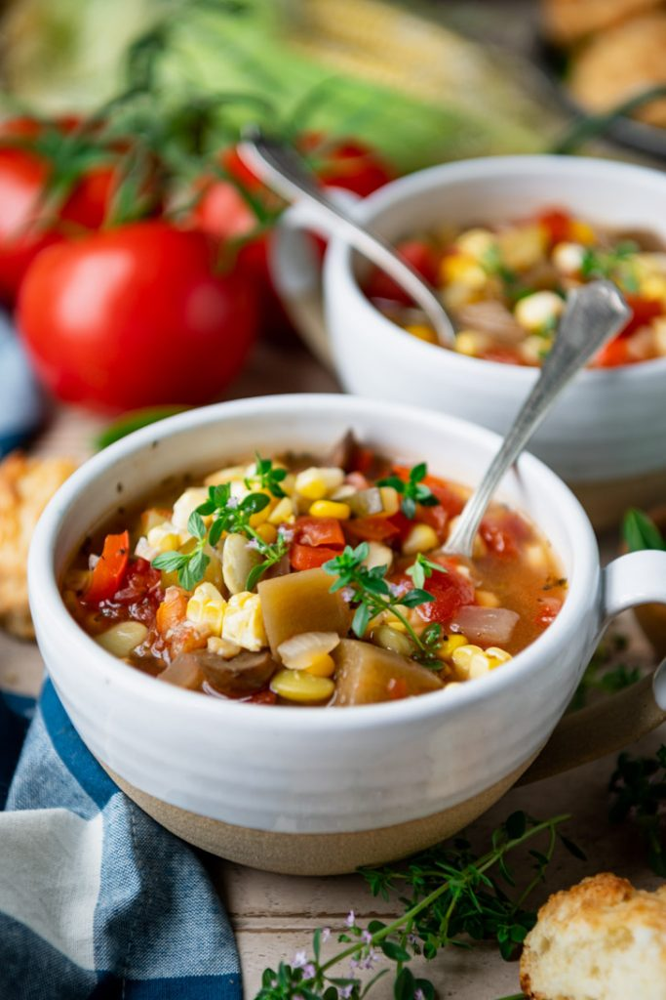

<!DOCTYPE html>
<html lang="en"></html>

<head>
<meta charset="utf-8">
  <title>Veggie Soup</title>
</head>

<body>
  <p><h1>Summer Vegetable Soup</h1></p>
  

  <p><h3>Description</h3></p>
    <p> A light and healthy summer vegetable soup is the perfect way to take advantage of all of the season's fresh produce. 
        Best of all, there's no need to heat up your kitchen -- just turn on your stovetop, Instant Pot, or Crock Pot for 
        this easy homemade vegetable soup recipe that keeps well in the freezer for months. It's delicious alongside a loaf of 
        crusty bread, a skillet of cornbread, or a basket of buttermilk biscuits.</p>

  <p><h3>Ingredients</h3></p>
    <ul>
      <li>1 tablespoon olive oi</li> 
      <li>1 medium onion, chopped</li> 
      <li>4 teaspoons minced garlic</li> 
      <li>3 medium ears fresh corn, kernels removed (or 2 ¼ cups frozen corn</li> 
      <li>2 lbs. tomatoes (about 6 medium), peeled, seeded and chopped (or about 28 ounces diced tomatoes, not drained)</li> 
      <li>1 sweet bell pepper, seeded and diced</li> 
      <li>2 medium zucchini, diced</li> 
      <li>1 cup fresh or frozen lima beans</li> 
      <li>8 ounces sliced mushrooms</li> 
      <li>1 small eggplant, peeled and diced</li> 
      <li>4 cups low-sodium vegetable broth</li> 
      <li>1 tablespoon vinegar</li> 
      <li>1 teaspoon kosher sal</li> 
      <li>Ground black pepper, to taste</li> 
    </ul>
  
  <p><h3>Steps</h3></p>
    <ol>
      <li>Heat olive oil in a large Dutch oven over medium-high heat. Add onion and garlic, and sauté (stirring regularly), just until onion is tender (about 5-7 minutes).</li>
      <li>Add remaining ingredients to the pot; bring to a boil.</li>
      <li>Cover the pot, reduce the heat, and gently simmer for about 1 hour (or until the vegetables are tender). Stir the pot occasionally as it simmers.</li>
      <li>Taste the soup and season with salt and pepper. Ladle into bowls and serve!</li>
    </ol>

  

</body>